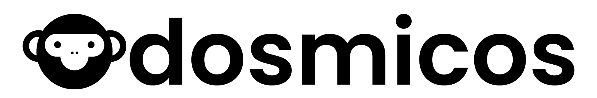

Página interna para elegir y copiar toolkitsToolkits UGC simples.
Cada link es una guía corta para creadoras que apenas están empezando en redes.
Toolkit 11
Ruana fácil de poner
Muestra que la ruana es práctica para el día a día y más fácil de poner que una chaqueta cuando hay afán.
Toolkit 12
Ruana como regalo útil
Muestra la ruana como un regalo bonito, práctico y que sí se usa.
Toolkit 13
Sleeping para bebé que se destapa
Muestra el sleeping como una alternativa práctica para mantener al bebé abrigadito sin depender de cobijas sueltas.
Toolkit 14
Parka o chaqueta para clima frío
Muestra que la parka/chaqueta no es solo linda, sino funcional para frío, viento, lluvia o viajes a tierra fría.
Toolkit 15
Ruana: animalitos que aman
Muestra la reacción del niño cuando elige o se emociona con su animalito favorito.
Toolkit 16
Chaqueta: salida real con clima
Graba una salida real con clima: capota puesta, cierre fácil y niño moviéndose cómodo.
Toolkit 17
Zapatitos: primeros pasos
Explora la categoría nueva de zapatitos con video de primeros pasos, look completo o zapato que no se sale.
Toolkit 18
Una cosa menos que revisar a las 3 a.m.
Ángulo mamá-céntrico: el descanso de la mamá cuando no tiene que revisar cobijas a cada rato.
Toolkit 19
TOG / temperatura explicado simple
Explica en palabras muy simples cómo saber si el bebé está bien abrigado para frío o calor.
Toolkit 20
Ruana: fotos lindas / recuerdos
Haz una mini sesión casera o en parque con la ruana de animalito y termina con la foto final.
Toolkit 21
Viaje a tierra fría / vacaciones
Muestra cómo se empaca la ruana, que no ocupa espacio y que llega lista para clima frío.
Toolkit 22
Regalo útil: baby shower / abuelas
Muestra la entrega del regalo y la reacción: algo que la mamá sí va a usar.